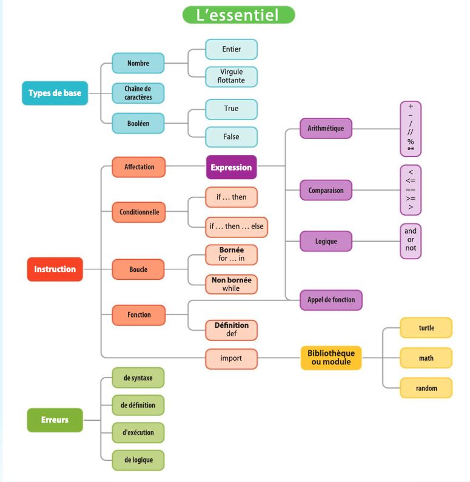

cours
1. Types de base
Les langages de programmation permettent de manipuler des données de différents types.
Un type définit l’ensemble des valeurs possibles pour les données qu’il admet.
On distingue les types de base, décrits dans ce chapitre, des types structurés décrits dans les chapitres suivants.
Les principaux types en Python sont : - les nombres - les textes (appelés chaînes de caractères) - les booléens
1.1 Nombres
Python distingue :
- les nombres entiers (
int) - les nombres à virgule flottante (
float)
Exemples d'entiers :
5
-20
987654321
Les nombres à virgule flottante utilisent le point comme séparateur décimal :
1.5
3.14159
-6.5
On peut omettre le 0 avant ou après le point :
.5
5.
Notation scientifique avec e :
5e3 # 5000
-123.4e-5
1.2 Chaînes de caractères
Les chaînes de caractères (string) sont des textes entre guillemets simples ou doubles.
'Bonjour'
"Bonjour"
Cela permet d'utiliser l'autre type de guillemets dans le texte :
"Il dit qu'il fait beau et s'en va."
'Il dit: "Il fait beau" et part.'
Les chaînes sont normalement sur une seule ligne.
Pour écrire un texte sur plusieurs lignes :
"""Voici un texte
sur plusieurs lignes"""
1.3 Booléens
Les valeurs booléennes (bool) ne peuvent prendre que deux valeurs :
True
False
Elles sont utilisées pour la prise de décision.
Exemple :
2 < 3 # True
3 < 2 # False
2. Variables et affectation
Les données d’un programme sont rangées dans des variables.
Chaque variable Python a un nom qui doit :
- contenir lettres, chiffres ou
_ - ne pas commencer par un chiffre
- ne pas contenir d'espace
Exemples de noms :
taille
age
nombre_de_tours
Python distingue majuscules et minuscules :
taille
Taille
TAILLE
sont trois variables différentes.
Affectation d'une valeur
Pour stocker une valeur dans une variable :
variable = valeur
Exemple :
taille = 1.78
⚠️ Le signe = n'est pas une égalité mathématique, il signifie affecter une valeur.
Exemple :
hauteur = taille
La variable hauteur reçoit la valeur de taille.
Programme :
taille = 1.78
hauteur = taille
taille = 1.60
Résultat :
hauteur = 1.78
taille = 1.60
3. Expressions
Une expression permet de calculer une valeur en combinant :
- des constantes
- des variables
- des fonctions
- des opérateurs
Exemples :
taille
3 + 4
sin(x)
3.1 Opérateurs arithmétiques
Opérations principales :
| Opération | Symbole |
|---|---|
| addition | + |
| soustraction | - |
| multiplication | * |
| division | / |
| puissance | ** |
Exemples :
3 + 4
3 * 4
2 ** 3
Division entière :
7 // 2 # 3
Reste de division :
7 % 2 # 1
Priorités :
*** / // %+ -
Les parenthèses permettent de changer l'ordre :
(3 + 5) // 3 ** 4
Fonctions mathématiques
On peut importer la bibliothèque math :
from math import *
Exemple : calcul des racines d'un polynôme.
delta = b**2 - 4*a*c
x1 = (-b + sqrt(delta))/(2*a)
x2 = (-b - sqrt(delta))/(2*a)
3.2 Opérateurs logiques
Les comparaisons donnent un résultat booléen.
Opérateurs :
==
!=
<
>
<=
>=
Exemples :
3 + 4 < 6
1 + 2 == 6 / 4
Combinaisons logiques :
x < 0 or x > 100
x >= 0 and x <= 100
not majeur
3.3 Opérateurs sur les chaînes de caractères
Concaténation :
'bon' + 'jour' # 'bonjour'
Répétition :
'ha' * 3 # 'hahaha'
Comparaison de chaînes :
'bon' < 'jour'
'ha' == 'HA'
'ou' in 'jour'
'on' not in 'Bon'
Longueur d'une chaîne :
len('toto') # 4
Priorité des opérateurs (logiques)
orandnotin,not in==,!=,<,<=,>,>=+,-*,/,//,%**
4. Instructions
Les instructions sont les briques de base d’un programme : un programme est une suite d’instructions.
Nous avons déjà vu trois types d’instructions :
- Affectation : variable = expression, par exemple a = b**2 - 4*a*c
- Appel de fonction : fonction(paramètres), par exemple print("abc") ou forward(10)
- Importation d’une bibliothèque : from bibliothèque import *, par exemple from turtle import *
Le langage Python a trois autres types d’instructions : les conditionnelles, les boucles et les définitions de fonctions.
4.1. Conditionnelles et blocs
La conditionnelle est une instruction qui permet d’exécuter du code selon qu’une condition est remplie ou non. Par exemple, pour faire reculer la tortue de 10 pas et la faire tourner à gauche de 20 degrés si une certaine variable x contient une valeur négative :
if x < 0:
backward(10)
left(20)
L’instruction if est suivie d’une expression booléenne et du caractère :. Les instructions à exécuter si la condition est satisfaite sont indentées, c’est-à-dire qu’elles sont décalées par rapport au if en insérant des espaces. Une telle séquence d’instructions, toutes indentées du même nombre d’espaces, est appelée un bloc. C’est ainsi que le langage Python différencie la séquence d’instructions à effectuer quand la condition est remplie, par opposition à la suite du code qui sera exécutée dans tous les cas :
if x < 0:
backward(10) # exécutée si x < 0
left(20) # exécutée si x < 0
forward(10) # exécutée dans tous les cas
La conditionnelle peut aussi avoir une branche else: pour exécuter un bloc si la condition n’est pas remplie, c’est-à-dire si le résultat de l’expression qui suit if est False. Ici, la tortue recule de 10 et tourne à gauche si x est négatif, sinon elle avance de 10 pas.
if x < 0: # "si x est négatif..."
backward(10)
left(20)
else: # "sinon, ..."
forward(10)
Plusieurs tests peuvent être enchaînés grâce au mot-clé elif, abréviation de else if. Ici, la tortue tourne à gauche si x est négatif, elle tourne à droite si x est supérieur à 100, et elle avance de 10 dans les autres cas.
if x < 0: # "si x est négatif..."
left(20)
elif x > 100: # "sinon, si x > 100..."
right(20)
else: # "sinon, ..."
forward(10)
Restez que l’on peut être amené à évaluer la véracité des conditions dès lors que l’une d’entre elles est True :
if x < 0:
print('négatif')
elif x < -100:
print('très négatif')
Enfin, les conditionnelles peuvent être imbriquées :
if x < 0:
if x % 2 == 0:
print('pair et négatif')
else:
print('impair et négatif')
else:
print("pair, et c'est tout ce qui m'intéresse")
4.2. Boucles
Les boucles permettent de répéter des blocs d’instructions. Python propose deux types de boucles : les boucles bornées (for) et les boucles non bornées (while).
Une boucle bornée (ou boucle for, « pour » en français) permet d’exécuter un bloc d’instructions, appelé corps de la boucle, un nombre prédéfini de fois. La forme la plus courante utilise la fonction range(n) pour exécuter la boucle n fois. Dans l’exemple suivant, la tortue tourne, puis avance aléatoirement 100 fois de suite :
for i in range(100): # Exécuter 100 fois le bloc qui suit
left(360.0*random()) # Tourner d'un angle aléatoire
forward(40*random()) # Avancer d'une distance aléatoire
À chaque tour de boucle, c’est-à-dire à chaque exécution du bloc, la variable indiquée après for augmente de 1, en partant de 0. Dans cet exemple, la tortue avance de plus en plus à chaque tour de boucle, en tournant du même angle : elle décrit une spirale.
for i in range(100): # Exécuter 100 fois le bloc qui suit
left(10) # Tourner d'un angle fixe
forward(i) # Avancer d'une distance croissante
Il peut sembler curieux de commencer à compter à partir de 0 plutôt que 1, mais nous verrons que cette norme en programmation est en réalité plus commode en pratique.
La boucle non bornée (ou boucle while, « tant que » en français) permet d’exécuter un bloc d’instructions tant qu’une expression booléenne est vraie. Dans l’exemple qui suit, on programme à nouveau une marche aléatoire de la tortue mais au lieu de fixer le nombre de pas, on s’arrête lorsque la position de la tortue sort d’un carré de 400 pas autour du centre de la fenêtre. Les fonctions xcor() et ycor() donnent la position de la tortue, et la fonction abs(x) calcule la valeur absolue de x.
while abs(xcor()) < 400 and abs(ycor()) < 400:
left(360.0*random())
forward(10 + 40*random())
Selon les nombres aléatoires, la tortue peut s’arrêter au bout de quelques pas, ou bien errer très longuement, peut-être pour toujours !
5. Définition de fonctions
Une fonction permet d’encapsuler un bloc d’instructions et de lui donner un nom. On peut ensuite exécuter ce bloc en utilisant son nom. On dit que l’on appelle cette fonction.
Une fonction peut avoir un ou plusieurs paramètres, qui permettent de transmettre des valeurs au bloc d’instructions. À l’intérieur de ce bloc, les paramètres sont traités comme des variables. La fonction suivante dessine un carré dont la longueur du côté est passée en paramètre :
def carre(c): # c est le paramètre
""" Dessine un carré de côté c """
for cote in range(4):
forward(c) # on avance de la valeur de c
left(90)
5.1. Appel de fonction
Pour appeler une fonction, on indique son nom suivi des arguments entre parenthèses. Les arguments sont des expressions et doivent correspondre aux paramètres.
carre(20)
carre(random() * 100)
5.2. Valeur de retour
Une fonction peut retourner une valeur. L’instruction return définit la valeur retournée par la fonction, et interrompt immédiatement son exécution pour retourner la valeur au point d’appel.
Voici une fonction qui calcule et renvoie la plus petite de deux valeurs :
def min(a, b):
""" Retourne le minimum de a et b """
if a < b:
return a
# Pas besoin de 'else': si a < b, la fonction
# a déjà cessé de s'exécuter à ce point.
return b
print(min(10, 20))
5.3. Variables locales et variables globales
Lorsqu’une fonction utilise des variables, celles-ci sont normalement propres à la fonction et ne sont pas accessibles à l’extérieur de celle-ci. On dit qu’il s’agit de variables locales, par opposition aux variables globales qui sont utilisées dans le programme principal.
Dans l’exemple ci-dessous, la variable a de la ligne 1 n’est pas la même que celle de la ligne 3, bien qu’elle ait le même nom, c’est pourquoi le programme affiche 10.
a = 10 # variable globale
def f():
a = 5 # variable locale
f()
print(a) # référence la variable globale ; affiche 10
On peut aussi utiliser des paramètres, qui se comportent comme des variables locales de la fonction :
a = 10 # variable globale
def f(a): # paramètre = variable locale
print(a) # affiche la valeur du paramètre
f(5) # affiche 5
print(a) # référence la variable globale ; affiche 10
Cependant, si l’on référence dans une fonction une variable qui n’a pas été affectée dans la fonction, Python regarde s’il existe une variable globale de ce nom. Si oui, il utilise sa valeur au lieu de provoquer une erreur du type « variable indéfinie ». Dans l’exemple suivant, la variable message référencée dans la fonction f, ligne 3, est la variable globale message de la ligne 1.
message = "bonjour" # variable globale
def f():
print(message) # référence à la variable globale !
f() # affiche "bonjour"
Cette règle du langage Python est une source potentielle d’erreurs, car il suffit d’ajouter une affectation pour créer une variable locale et « cacher » la variable globale de même nom.
message = "bonjour" # variable globale
def f():
message = "bye" # affectation qui crée une variable locale
print(message) # référence à la variable locale
f() # affiche "bye"
print(message) # affiche "bonjour"
Le langage Python permet cependant d’affecter, à l’intérieur d’une fonction, une variable globale. Pour cela, il faut déclarer la variable comme étant globale au début de la fonction, avec l’instruction global.
message = "bonjour" # variable globale
def f():
global message # déclare la référence à la variable globale
message = "bye" # affectation de la variable globale
print(message) # référence à la variable globale
f() # affiche "bye"
print(message) # affiche "bye" (la valeur de message a changé)
Modifier ainsi une variable globale depuis une fonction s’appelle un effet de bord et est considéré comme une mauvaise pratique, même si elle est parfois indispensable. Référencer une variable globale depuis une fonction est toléré lorsqu’il s’agit d’un élément de configuration du programme.
Par exemple, une variable booléenne globale trace peut servir à contrôler l’affichage de messages lors de l’exécution.
trace = True
def f():
...
if trace:
print("on a appelé f")
6. Erreurs et « bugs »
Plusieurs types d’erreurs, ou « bugs », peuvent se produire lorsque l’on exécute un programme Python. Un message d’erreur indique parfois la cause de l’erreur. Les erreurs de syntaxe sont dues au non-respect des règles d’écriture de Python, comme une indentation incorrecte ou, ici, l’oubli d’une parenthèse.
>>> for i in range(10:
File "<stdin>", line 1
for i in range(10:
^
SyntaxError: invalid syntax
Les erreurs de définition sont dues à l’usage d’un nom qui n’a pas encore été défini, par exemple une fonction ou une variable qui n’existent pas encore, comme ici la fonction avance.
>>> avance()
Traceback (most recent call last):
File "<stdin>", line 1, in <module>
NameError: name 'avance' is not defined
Les erreurs de type sont dues à des valeurs dont le type n’est pas compatible avec l’expression dans laquelle elles apparaissent, comme ici la tentative d’ajouter un entier et une chaîne de caractères.
>>> print(3 + "cm")
Traceback (most recent call last):
File "<stdin>", line 1, in <module>
TypeError: unsupported operand type(s) for +: 'int' and 'str'
Les erreurs d’exécution sont dues à des instructions que l’ordinateur ne sait pas exécuter, comme une division par zéro.
>>> 10/0
Traceback (most recent call last):
File "<stdin>", line 1, in <module>
ZeroDivisionError: division by zero
Les erreurs de logique n’occasionnent en général pas de message d’erreur car il s’agit d’erreurs dans la logique du programme, qui n’enfreignent pas les règles de Python. Ce sont souvent les erreurs les plus difficiles à résoudre. Une erreur de logique courante est la boucle infinie : le programme ne s’arrête jamais car la condition d’une boucle non bornée ne devient jamais fausse.
while x > 0:
x = x + 1
Dans ce cas, il faut en général interrompre le programme « de force » en tapant Control-C.
Il n’existe pas de méthode miracle pour « débugger » mais il est souvent utile d’ajouter des traces dans son programme pour vérifier qu’il fonctionne comme prévu, ou pour comprendre la cause de l’erreur, notamment à l’aide de la fonction print(). Les environnements de programmation tels que EduPython ou Spyder permettent d’exécuter un programme pas à pas, c’est-à-dire une instruction à la fois, et d’explorer les valeurs des variables à chaque pas.
